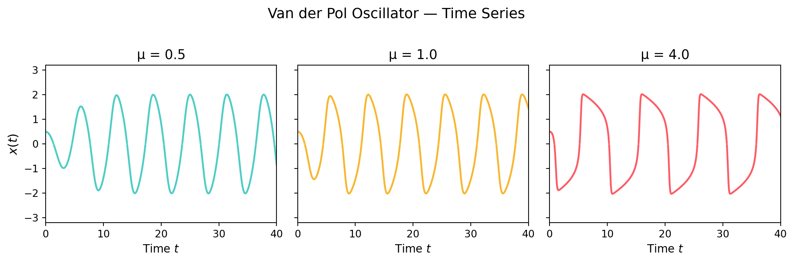

Show code
import numpy as np
import matplotlib.pyplot as plt
from scipy.integrate import solve_ivp
def vdp(t, z, mu):
x, y = z
return [y, mu * (1 - x**2) * y - x]
t_span = (0, 40)
t_eval = np.linspace(*t_span, 2000)
z0 = [0.5, 0.0]
fig, axes = plt.subplots(1, 3, figsize=(11, 3.5), sharey=True)
mus = [0.5, 1.0, 4.0]
colors = ["#4ecdc4", "#f7b731", "#fc5c65"]
for ax, mu, color in zip(axes, mus, colors):
sol = solve_ivp(vdp, t_span, z0, args=(mu,), t_eval=t_eval, method="RK45")
ax.plot(sol.t, sol.y[0], color=color, lw=1.8)
ax.axhline(0, color="white", lw=0.5, alpha=0.4)
ax.set_title(f"μ = {mu}", fontsize=13)
ax.set_xlabel("Time $t$", fontsize=11)
ax.set_xlim(0, 40)
ax.set_ylim(-3.2, 3.2)
axes[0].set_ylabel("$x(t)$", fontsize=12)
fig.suptitle("Van der Pol Oscillator — Time Series", fontsize=14, y=1.02)
plt.tight_layout()
plt.savefig("vdp_timeseries.png", dpi=150, bbox_inches="tight",
facecolor="#191919")
plt.show()